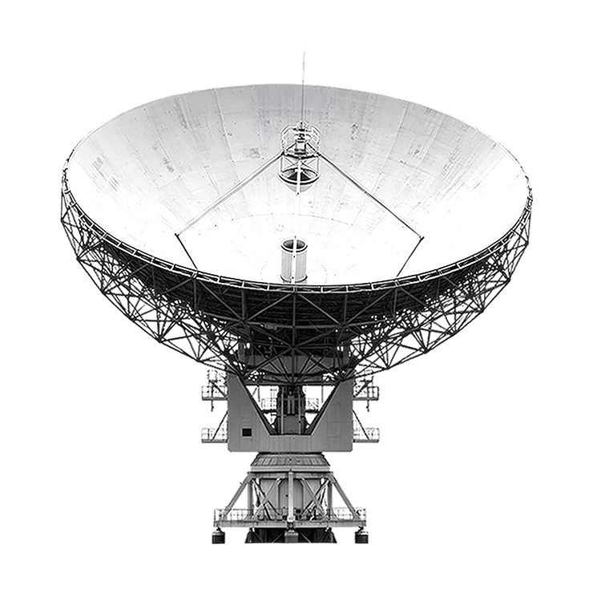
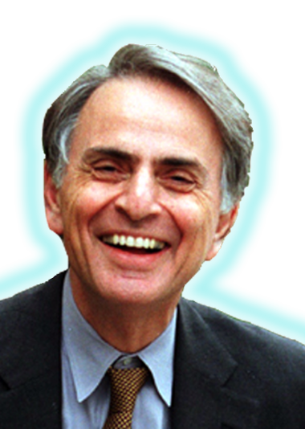
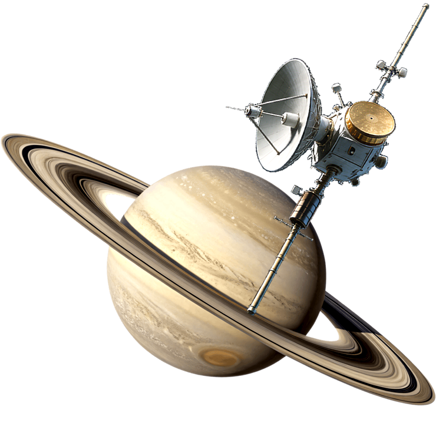
Carl Sagan (1934-1996) foi um cientista, astrônomo e escritor norte-americano, conhecido por seus livros de divulgação científica, e pela série de TV “Cosmos: Uma Viagem Científica”.
Carl Edward Sagan nasceu no Brooklin, Nova Yorque, no dia 9 de novembro de 1934. Era filho de San Sagan, um operário da indústria têxtil e de Rachel Molly Gruker, uma dona de casa, ambos desdentes de judeus ucranianos.
Com cinco anos, Sagan já mostrava seu interesse pela natureza e começou a frequentar a biblioteca pública em busca de informações sobre as estrelas. Com sete anos visitou o Museu Americano de História Natural. O interesse pelo espaço tornou-se seu principal foco.
Ao longo de sua vida, recebeu vários prêmios e condecorações pelo seu trabalho de divulgação científica. Sagan é considerado um dos divulgadores científicos mais carismáticos e influentes da história, graças a sua capacidade de transmitir as ideias científicas e os aspectos culturais ao público não especializado.
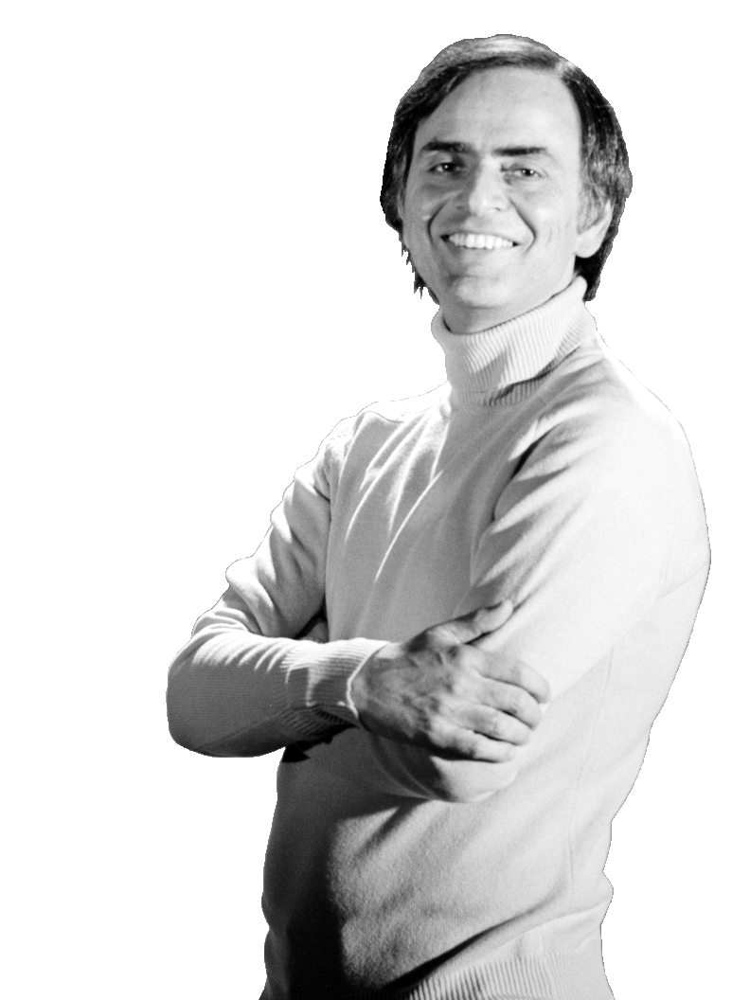
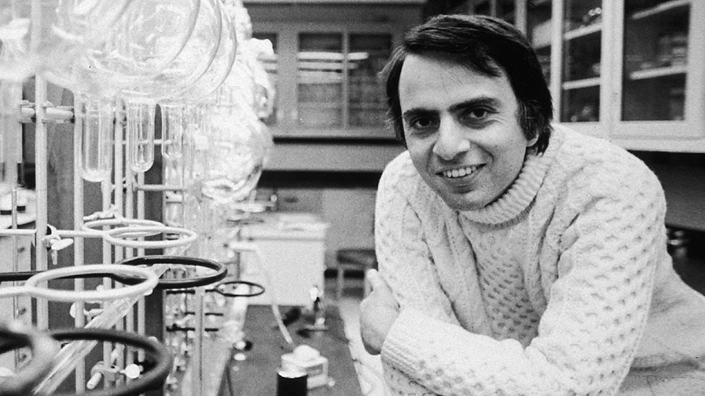
Carl Sagan ingressou na escola secundária David A. Boody, em Bensonhurst, onde sua família estava morando. Em 1948, mudou-se para Rahway e estudou na Rahway Hight School, em Nova Jersey. Foi nomeado presidente do clube de química e em casa montou seu próprio laboratório.
Formou-se em 1951 e nessa época, já era considerado um aluno superdotado. Em seguida, Ingressou na Universidade de Chicago quando se juntou ao Ryerson Astronomical Society. Em 1955 concluiu a licenciatura em Física. Em 1956 concluiu a pós-graduação com a dissertação “Estudos Físicos dos Planetas”. Em 1960 se doutorou em Astronomia e Astrofísica, na mesma universidade.
Entre 1960 e 1962, Sagan lecionou na Universidade da Califórnia, em Berkeley. Entre 1962 e 1968 trabalhou o Observatório Astrofísico Smithsonian, em Cambridge, Massachusetts. Ao mesmo tempo, entre 1963 e 1968 foi professor na Universidade de Harvard, onde fez palestras, realizou pesquisas e orientou os estudantes de pós-graduação.
A partir de 1968 lecionou na Cornell University, em Ithaca. Entre 1972 e 1981 foi diretor associado do centro de Radiofísica e Investigação Espacial de Cornell.
Em 1970, Carl Sagan foi nomeado diretor do Centro de Estudos Planetários. Foi colaborador da NASA. Foi o idealizador das mensagens radiotelegráficas enviadas pelas sondas Pioneer 10 e 11 ao espaço para conectar com possíveis civilizações extraterrestres.
Carl Sagan chefiou importantes projetos de exploração do sistema solar. Foi um dos primeiros cientistas a estudar o efeito estufa em escala planetária, descobrindo as altas temperaturas em Vênus. Contrário ao arsenal nuclear fez longa advertência dos perigos de seu uso.
(em ordem de publicação):
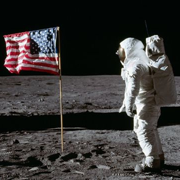
Programa Apollo Atuou como consultor e assessor da NASA, ajudando a instruir astronautas e a planejar a Apollo 11 que levou o ser humano à Lua em 1969.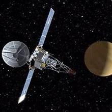
Missões Mariner Ajudou a moldar o design das missões e a interpretar os dados revolucionários coletados pelas primeiras sondas robóticas interplanetárias da humanidade.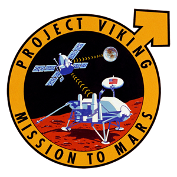
Projeto Viking Liderou o Projeto Viking da NASA, que enviou as sondas Viking 1 e Viking 2 a Marte em 1975 (com pouso em 1976).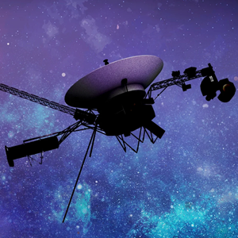
Voyager 1 e Voyager 2 Foi o idealizador de fotografias históricas como o Pálido Ponto Azul (Pale Blue Dot). Ambas carregam discos de ouro com informações dos habitantes da Terra.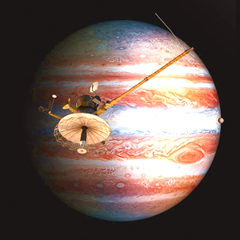
Projeto Galileo Idealizou e promoveu a criação da missão junto à NASA na década de 1970, defendendo a exploração aprofundada de Júpiter e suas luas.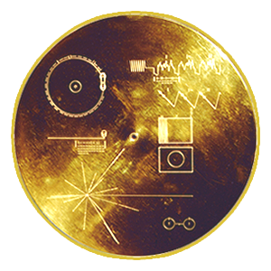
Mensagens Interestelares Criou as placas douradas das sondas Pioneer 10 e 11 e idealizou o disco de uuro da Voyager, contendo sons, imagens e saudações da Terra enviada ao espaço.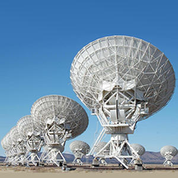
Projeto SETI Defendeu e promoveu ativamente a Busca por Inteligência Extraterrestre (Search for Extraterrestrial Intelligence).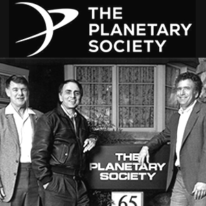
Sociedade Planetária Co-fundou em 1980 a maior organização não governamental de interesse público voltada para a astronomia e exploração espacial.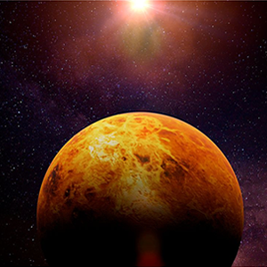
Estudos de Vênus e Efeito Estufa Foi um dos primeiros cientistas a calcular e modelar o efeito estufa descontrolado na atmosfera de Vênus, aplicando esses conceitos à Terra.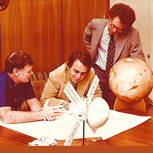
Pesquisa Atmosférica e Planetária Estudou as mudanças sazonais em Marte (explicando as tempestades de poeira) e a névoa orgânica de Titã (lua de Saturno).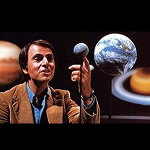
Cosmos (Série e Livro) Co-criou e apresentou a premiada série de televisão Cosmos: Uma Viagem Pessoal (1980), assistida por centenas de milhões de pessoas no mundo todo.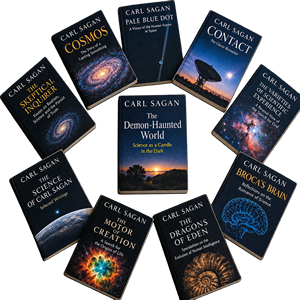
Livros Marcantes: Tais como O Mundo Assombrado pelos Demônios (defendendo o pensamento crítico e combatendo a pseudociência), A Conexão Cósmica e Sombras de Ancestrais Esquecidos.